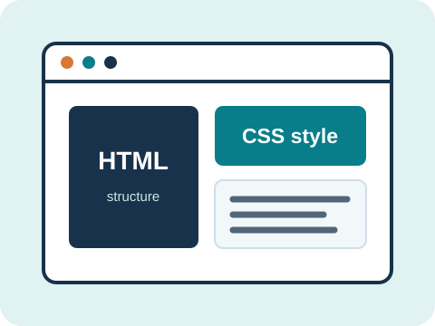

A beginner's field guide
Build a strong foundation for the web.
Learn how HTML gives a page structure, how CSS shapes its appearance, and how thoughtful choices make websites work for everyone. Start with the essentials, then explore accessibility, responsive layouts, and trusted next steps.
Start with HTML
Welcome to web development
Web development is the practice of creating websites and applications for the internet. A web page begins with content and structure, then gains visual style and interactive behavior. This guide focuses on the first two foundations: HTML and CSS.
Browsers read HTML, build a document tree, apply CSS rules, and render the result. JavaScript can add behavior, but a clear semantic structure and usable presentation make a strong starting point even before interaction is added.
Explore the topics in order or use the learning path below to jump to a section.
- 01 · Structure
Use HTML to describe headings, paragraphs, links, and page regions.
- 02 · Presentation
Use CSS to style content and create flexible layouts.
- 03 · Practice
Review the key concepts and try the self-assessment.
Explore the guide
- HTML Basics — structure and meaning
- CSS Basics — visual design and layout
- Key Concepts — seven ideas to remember
- Self-Assessment Quiz — check what you have learned
- References — trusted places to keep learning
- About — project details
Key terms
| Term | Meaning |
|---|---|
| HTML | The markup language used to organize and describe web content. |
| CSS | The style-sheet language used to control how web content looks and is arranged. |
| Element | A piece of a page, usually defined by an HTML start tag and end tag. |
| Selector | A pattern in CSS that identifies which HTML elements a rule styles. |
| Responsive design | An approach that adapts a layout to different screen sizes and devices. |
| DOM | The browser's structured representation of a document, which scripts and styles can work with. |
| Accessibility | Designing and building so people with different abilities and ways of browsing can use the web. |